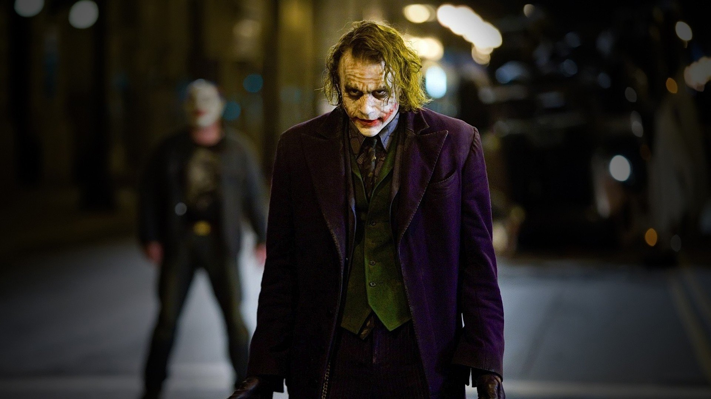
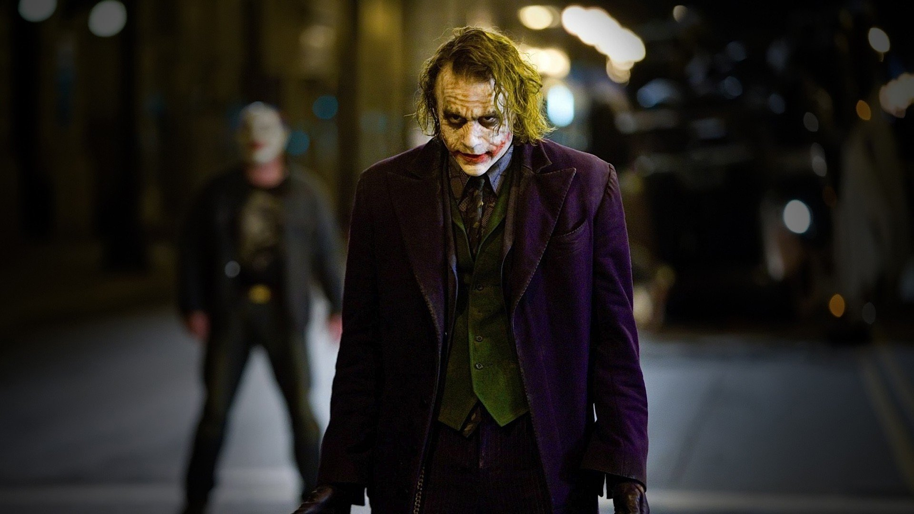

Synopsis
Chapter1
Chapter1
A gang of criminals rob a Gotham City mob bank, murdering each other for a higher share of the money
until only the Joker remains, who escapes with the money. Batman, District Attorney Harvey Dent and
Lieutenant James Gordon form an alliance to rid Gotham City of organized crime. Bruce Wayne believes
that with Dent as Gotham's protector, he can retire from being Batman and lead a normal life with Rachel
Dawes – even though she and Dent are dating.
Chapter2
Chapter2
Mob bosses Sal Maroni, Gambol, and the Chechen hold a video conference with their corrupt accountant,
Lau, who has taken their funds for safekeeping and fled to Hong Kong. The Joker interrupts the meeting
to warn them that since Batman is unhindered by the law, he would find Lau, who would give up the mob's
money for a plea bargain. Joker offers to kill Batman in exchange for half of their money. The mob
bosses disagree, and Gambol places a bounty on the Joker. The Joker
finds and kills Gambol, taking over his gang. The mob decides to take the Joker up on his offer.
Chapter3
Chapter3
A gang of criminals rob a Gotham City mob bank, murdering each other for a higher share of the money
until only the Joker remains, who escapes with the money. Batman, District Attorney Harvey Dent and
Lieutenant James Gordon form an alliance to rid Gotham City of organized crime. Bruce Wayne believes
that with Dent as Gotham's protector, he can retire from being Batman and lead a normal life with Rachel
Dawes – even though she and Dent are dating.
Casting
Christian Bale as Bruce Wayne / Batman
Christian Bale
as Bruce Wayne / Batman
A billionaire socialite who, after witnessing his parents' death in a mugging at age 8, travels the
world for seven years before returning home to operate as a bat-masked vigilante hailed as Gotham City's
"Dark Knight", using fear against the city's criminal underworld at night.
Heath Ledger as The Joker
Heath Ledger
as The Joker
A psychopathic illegalist mastermind portraying himself as an "agent of chaos", who rises from the
criminal underworld by thrusting Gotham into anarchy and drawing Batman ever closer to crossing the fine
line between heroism and vigilantism. Before Ledger was cast in July 2006, Paul Bettany, Lachy Hulme,
Adrien Brody, Steve Carell, and Robin Williams publicly expressed interest in it.
Gary Oldman as James Gordon
Gary Oldman
as James Gordon
A lieutenant in the Gotham City Police Department and one of the city's few honest police officers, who
forms a tenuous, unofficial alliance with Batman and Dent and is given the position of Police
Commissioner by the city's mayor following the recent commissioner's assassination.
Aaron Eckhart as Harvey Dent
Aaron Eckhart
Harvey Dent
The district attorney hailed as Gotham's 'White Knight', whose campaign against the criminal underworld
leaves half of his face disfigured, turning him into a murderer with a split-personality bent on
revenge. Nolan and David S. Goyer had originally considered using Dent in Batman Begins, but they
replaced him with the new character Rachel Dawes when they realized they "couldn't do him justice".
Anne Hathaway as Selina Kyle / Catwoman
Anne Hathaway
as Selina Kyle / Catwoman
A professional cat burglar, grifter, and femme fatale who establishes a playful, teasing relationship
with Wayne that 'takes some of the somberness away from his character', and pursues a "clean slate" (a
computer program rumored to be able to erase a person's criminal history) when she crosses paths with
both Wayne and Batman.
Michael Caine as Alfred Pennyworth
Michael Caine
as Alfred Pennyworth
Bruce's trusted butler and confidant, who supplies useful advice to Bruce and likeness as a father
figure, leading him to be labeled "Batman's batman".
Morgan Freeman as Lucius Fox
Morgan Freeman
as Lucius Fox
The CEO and later Executive Vice President of Wayne Enterprises, who runs the company on Wayne's behalf
and serves as his armorer for the Batsuit, providing him with high-tech equipment and discreetly
developing cutting-edge technology and weaponry, even as Wayne Enterprises starts losing money.


 
